|
|
| echinoids text index | photo index |
| Phylum Echinodermata > Class Echinodea > sea urchins > Genera Salmacis |
| White
salmacis urchin Salmacis sphaeroides Family Temnopleuridae updated Apr 2020 Where seen? This almost-cuddly white sea urchin is seasonally common on our Northern shores among seagrasses. At some times, many of these sea urchins are seen, and then none seen for some time. On Cyrene Reef, gatherings of many of these sea urchins are sometimes seen. Features: Body diameter 5-8cm, white. Spines short (1-1.5cm) and sharp, about the same length. Spines on the underside have spade-like tips. Some have white spines with green or maroon bands. It has long tube feet and is often seen carrying all kinds of things from shells to seaweeds. It can quickly gather these things to cover itself. This behaviour may help camouflage it or shield it from sunlight. |
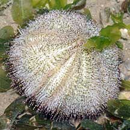 Changi, May 08 |
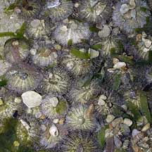 Sometimes gathered in large numbers. Cyrene Reef, Apr 07 |
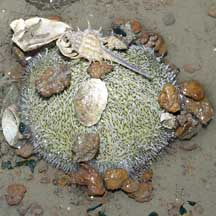 Carrying stuff. Beting Bronok, May 06 |
|
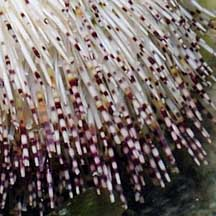 White spines with maroon bands. Changi, May 08 |
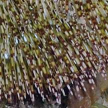 White spines with green and maroon bands. Cyrene Reef, Apr 08 |
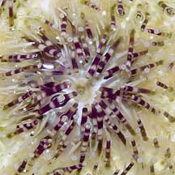 Flattened spines on underside. Changi, May 06 |
| What does it eat? It eats seaweeds. What eats them? Examination of tests (skeleton of a dead sea urchin) suggest that large snails might prey on them. Home on an urchin: Some animals live on this prickly animal. This includes Parasitic snails, the Zebra crab and sometimes, the Urchin-mouth worm is found curled around the mouth. |
|
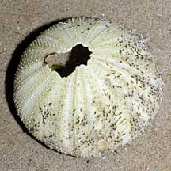 Hole with 'burn' mark suggests the urchin was attacked by a Helmet snail. Changi, May 08 |
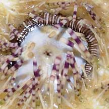 Worm-like thing seen on the underside. Changi, Oct 10 |
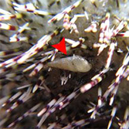 Parasitic snails seen on the urchin Cyrene, May 17 Photo shared on Singapore Biodiversity Records. |
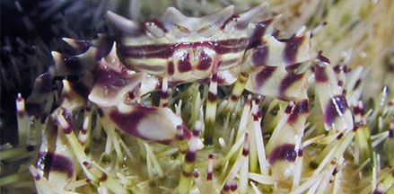 Zebra crab (Zebrida adamsii) seen on the urchin. Changi, Jun 17 Photo shared on Singpaore Biodiversity Records. |
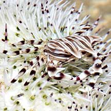 Zebra crab (Zebrida adamsii) seen on the urchin. East Coast Park, May 21 Photo shared by Loh Kok Sheng on facebook. |
 |
| White salmacis urchins on Singapore shores |
On wildsingapore
flickr
|
| Other sightings on Singapore shores |
|
Acknowlegment
References
|